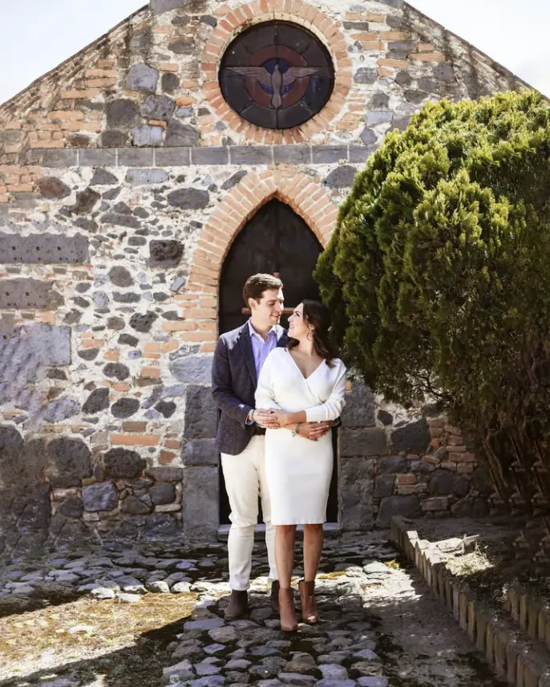

Elegir quién documentará tu boda no consiste solamente en comparar precios o fotografías destacadas. Conviene entender cómo trabaja cada equipo antes, durante y después de la celebración, porque el resultado depende tanto de su mirada como de su organización.
En Tlaxcala hay haciendas, iglesias y espacios con condiciones muy distintas de luz, distancia y logística. Una propuesta adecuada debe responder al ritmo de tu boda, a las locaciones y al tipo de recuerdos que deseas conservar.
Aspecto 01Revisa bodas completas, no solamente fotografías destacadas
Una selección breve muestra los mejores momentos de un portafolio, pero una boda completa permite evaluar consistencia. Revisa cómo se documentan los preparativos, la ceremonia, los retratos, la recepción y las situaciones con poca luz.
También observa si se conservan los momentos pequeños: reacciones de la familia, detalles del lugar y transiciones que ayudan a contar la historia. Un buen reportaje debe funcionar como conjunto, no depender de dos o tres imágenes espectaculares.
- Pide ver celebraciones con horarios y espacios parecidos a los tuyos.
- Comprueba que el color y la exposición sean consistentes durante todo el día.
- Observa cómo resuelven interiores, exteriores y recepción nocturna.
Aspecto 02Identifica si el estilo coincide con lo que quieres recordar
Hay propuestas documentales, editoriales, clásicas y otras con una dirección más marcada. Ninguna etiqueta sustituye la revisión del trabajo. Pregunta cuánto interviene el fotógrafo, cómo dirige los retratos y qué espacio deja para que los momentos sucedan naturalmente.
La edición también forma parte del estilo. Los tonos, el contraste y la forma de tratar la piel deberían mantenerse coherentes entre distintas bodas y condiciones de iluminación.

Aspecto 03Compara el alcance real de cada cobertura
Dos paquetes con un nombre parecido pueden incluir cosas distintas. Confirma cuántas horas de trabajo contempla la propuesta, desde qué momento comienza, cuándo termina y qué ocurre si el programa se retrasa.
Pregunta si fotografía, video, dron, sesiones o fotolibro están incluidos o se cotizan por separado. También conviene saber cuántas fotografías digitales se entregan y si existe un proceso de selección.
Aspecto 04Pregunta quién estará presente el día de la boda
Conocer el nombre del estudio no siempre indica quién realizará la cobertura. Confirma quién dirigirá fotografía y video, cuántas personas asistirán y cómo se coordinan cuando hay dos locaciones o actividades simultáneas.
Un equipo coordinado puede distribuir responsabilidades sin interrumpir la ceremonia ni duplicar movimientos. Si contratas fotografía y video, revisa que ambas áreas compartan la planeación.
Aspecto 05Evalúa la planeación previa y el conocimiento de las locaciones
Las distancias y accesos influyen en el horario. No es lo mismo celebrar todo en una hacienda que trasladarse entre preparativos, iglesia y recepción. El fotógrafo debe preguntar por las ubicaciones, los tiempos de traslado, las restricciones y los momentos familiares importantes.
Conocer una locación ayuda, pero una buena planeación sigue siendo necesaria. La luz y los espacios cambian según la hora, la temporada, el montaje y el clima.
Aspecto 06Confirma plazos, selección y formato de entrega
Solicita que el tiempo de entrega quede explicado por escrito. Pregunta cuándo recibirás las fotografías, cómo se realiza la selección para fotolibro y si la galería digital permite descargar archivos en alta resolución.
Si habrá video, confirma qué piezas se entregan y cómo se revisarán. Cuando se incluye un fotolibro, conviene conocer el número de fotografías recomendado, el proceso de diseño y las oportunidades para comentar o aprobar.
Aspecto 07Pregunta cómo protegen el material
Una boda no se puede repetir. El estudio debería poder explicar, sin tecnicismos innecesarios, cómo respalda los archivos durante la cobertura y qué proceso sigue después del evento.
También pregunta qué sucede ante una falla de cámara, memoria o equipo, y si cuentan con alternativas para continuar trabajando. Las respuestas concretas ayudan a distinguir una operación profesional de una improvisada.
Aspecto 08Lee el contrato y el calendario de pagos
El contrato debe identificar a las partes, fecha, horarios, servicios, entregables, precio, forma de pago, cancelaciones y responsabilidades. Evita reservar basándote únicamente en mensajes o acuerdos verbales.
Antes de pagar, confirma qué cantidad aparta la fecha y cuándo se cubre el resto. Cualquier servicio adicional debería quedar registrado para evitar interpretaciones distintas.
Aspecto 09Valora la comunicación y la confianza
El fotógrafo estará cerca durante momentos personales y deberá coordinarse con familia, responsables del lugar y otros proveedores. La claridad con la que responde antes de la boda suele anticipar cómo gestionará la cobertura.
Busca una comunicación que te permita expresar prioridades y dudas. No es necesario conocer todos los detalles técnicos; sí necesitas comprender qué recibirás y cómo trabajarán.
Aspecto 10Contrasta opiniones con historias reales
Las reseñas aportan contexto sobre puntualidad, trato y entrega. Léalas junto con bodas completas y verifica que correspondan al mismo equipo y servicio que estás considerando.
Las historias reales permiten relacionar una opinión con un resultado visible. En lugar de buscar una clasificación absoluta, compara evidencia: experiencia en celebraciones similares, consistencia, organización y una propuesta compatible con tu boda.
Lista breve antes de reservar
- ¿Ya viste al menos una boda completa?
- ¿Sabes quién fotografiará y grabará tu celebración?
- ¿Los horarios, entregables y plazos están por escrito?
- ¿Comprendes el anticipo y el calendario de pagos?
- ¿La propuesta contempla traslados y condiciones de tus locaciones?
- ¿Te sientes cómodo con la comunicación y la forma de trabajo?
Para comparar estos criterios con trabajo publicado, puedes consultar nuestras historias completas de boda y la página de fotografía y video de bodas en Tlaxcala.